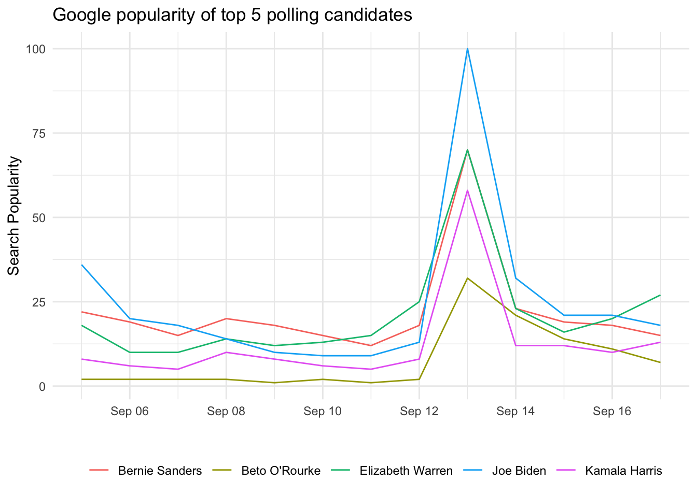

Chapter 5 google trends results
Over the past few years we have seen Google Trends becoming quite ubiquitous in politics. Pundits have used Google seach trends as talking points. It is not uncommon to hear news about a candidates search trends the days following a town hall or significant rally. It seems that Google trends are becoming the go to proxy for a candidate’s salience.
As a campaign, you are interested in the popularity of a candidate relative to another one. If candidate A has seen a gain from 50 to 70, that is all well and good. But how does that compare with candidates C and D? There are others potential use cases—that may be less fraught with media interruptions. For example, one can keep track of the popularity of possible policy issues—i.e. healthcare, gun safety, women’s rights.
Though the usefulness of Google Trends search popularity is still unclear, it may be something that your campaign might like to track. In this chapter we will explore how to acquire and utilize trend data using R. This chapter will describe how one can utilize Google Trends data to compare candidate search popularity and view related search terms. This will be done with the tidyverse, and the package trendyy for accessing this data.
5.1 Google Trends Data
5.1.1 Relative Popularity
The key metric that Google Trends provides is the relative popularity of a search term by a given geography. Relative search popularity is scaled from 0 to 100. This number is scaled based on population and geography size (for more information go here). This number may be useful on it’s own, but the strength of Google Trends is it’s ability to compare multiple terms. Using Google Trends we can compare up to 5 search terms—presumably candidates.
5.2 trendyy
Now that we have an intuition of how Google Trends may be utilized, we will look at how actually acquire these data in R. To get started install the package using install.packages("trendyy").
Once the package is installed, load the tidyverse and trendyy.
library(trendyy)
library(tidyverse)In this example we will look at the top five polling candidates as of today (6/10/2019). These are, in no particular order, Joe Biden, Kamala Harris, Beto O’Rourke, Bernie Sanders, and Elizabeth Warren. Create a vector with the search terms that you will use (in this case the above candidates).
candidates <- c("Joe Biden", "Kamala Harris", "Beto O'Rourke", "Bernie Sanders", "Elizabeth Warren")Next we will use the trendyy package to get search popularity. The function trendy() has three main arguments: search_terms, from, and to (in the form of "yyyy-mm-dd"). The first argument is the only mandatory one. Provide a vector of length 5 or less as the first argument. Here we will use the candidates vector and look at data from the past two weeks. I will create two variables for the beginning and end dates. This will be to demonstrate how functions can be used to programatically search date ranges.
# to today
end <- Sys.Date()
# from 2 weeks ago
begin <- Sys.Date() - 14Pass these arguments to trendy() and save them to a variable.
candidate_trends <- trendy(search_terms = candidates, from = begin, to = end)
candidate_trends## ~Trendy results~
##
## Search Terms: Joe Biden, Kamala Harris, Beto O'Rourke, Bernie Sanders, Elizabeth Warren
##
## (>^.^)> ~~~~~~~~~~~~~~~~~~~~ summary ~~~~~~~~~~~~~~~~~~~~ <(^.^<)
## # A tibble: 5 x 5
## keyword max_hits min_hits from to
## <chr> <int> <int> <date> <date>
## 1 Bernie Sanders 70 12 2019-09-05 2019-09-17
## 2 Beto O'Rourke 32 1 2019-09-05 2019-09-17
## 3 Elizabeth Warren 70 10 2019-09-05 2019-09-17
## 4 Joe Biden 100 9 2019-09-05 2019-09-17
## 5 Kamala Harris 58 5 2019-09-05 2019-09-17Trendy creates an object of class trendy see class(candidate_trends) trendy. There are a number of accessor functions. We will use get_interest() and get_related_queries(). See the documentation of the others.
To access to relative popularity, we will use get_interest(trendy).
popularity <- get_interest(candidate_trends)
popularity## # A tibble: 65 x 7
## date hits geo time keyword gprop category
## <dttm> <int> <chr> <chr> <chr> <chr> <chr>
## 1 2019-09-05 00:00:00 36 world 2019-09-05 2… Joe Bid… web All catego…
## 2 2019-09-06 00:00:00 20 world 2019-09-05 2… Joe Bid… web All catego…
## 3 2019-09-07 00:00:00 18 world 2019-09-05 2… Joe Bid… web All catego…
## 4 2019-09-08 00:00:00 14 world 2019-09-05 2… Joe Bid… web All catego…
## 5 2019-09-09 00:00:00 10 world 2019-09-05 2… Joe Bid… web All catego…
## 6 2019-09-10 00:00:00 9 world 2019-09-05 2… Joe Bid… web All catego…
## 7 2019-09-11 00:00:00 9 world 2019-09-05 2… Joe Bid… web All catego…
## 8 2019-09-12 00:00:00 13 world 2019-09-05 2… Joe Bid… web All catego…
## 9 2019-09-13 00:00:00 100 world 2019-09-05 2… Joe Bid… web All catego…
## 10 2019-09-14 00:00:00 32 world 2019-09-05 2… Joe Bid… web All catego…
## # … with 55 more rowsFor related queries we will use get_related_queries(trendy). Note that you can either pipe the object or pass it directly.
candidate_trends %>%
get_related_queries() %>%
# picking queries for a random candidate
filter(keyword == sample(candidates, 1))## # A tibble: 0 x 5
## # … with 5 variables: subject <chr>, related_queries <chr>, value <chr>,
## # keyword <chr>, category <chr>5.3 Visualizing Trends
I’m guessing your director enjoys charts—so do I. To make the data more accessible, use the popularity tibble to create a time series chart of popularity over the past two weeks. We will use ggplot2. Remember that time should be displayed on the x axis. We want to have a line for each candidate, so map the color aesthetic to the keyword.
ggplot(popularity,
aes(x = date, y = hits, color = keyword)) +
geom_line() +
labs(x = "", y = "Search Popularity",
title = "Google popularity of top 5 polling candidates") +
theme_minimal() +
theme(legend.position = "bottom",
legend.title = element_blank())